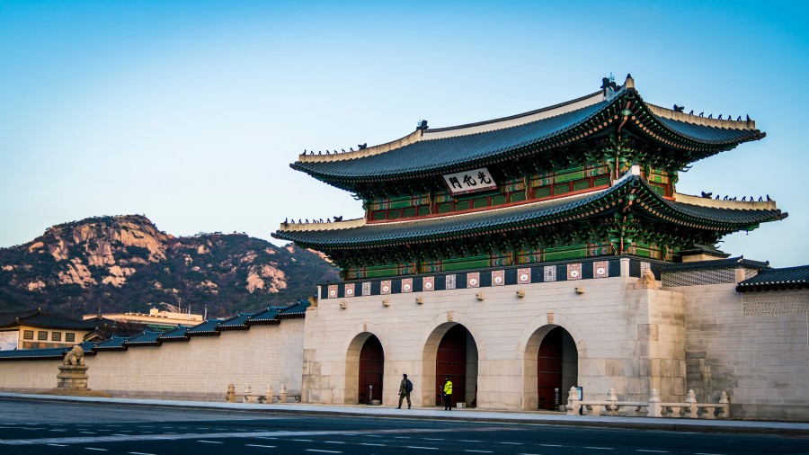
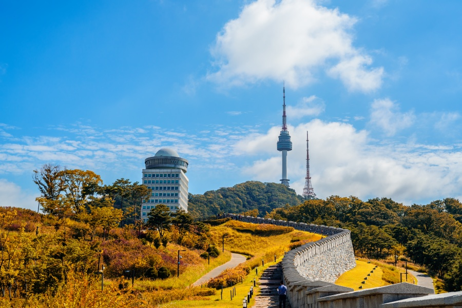
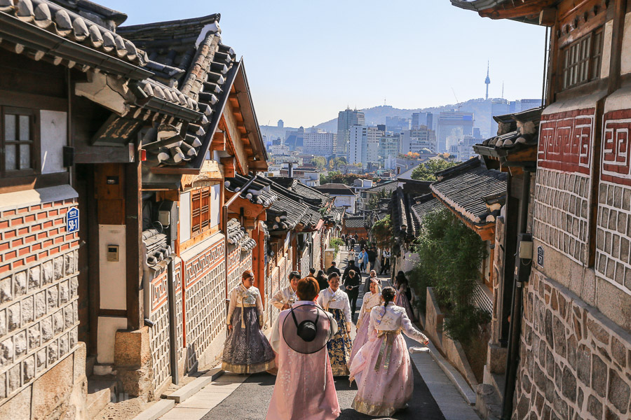
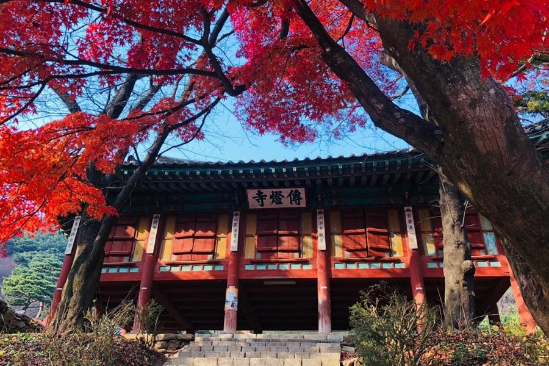

韓國熱門景點
從歷史悠久的宮殿與傳統韓屋，到浪漫的城市地標與寧靜的山林古寺，一起探索韓國值得造訪的特色景點！



03 / 北村韓屋村
北村韓屋村位於首爾市中心，保留了許多具有傳統特色的韓屋建築。 漫步在古色古香的巷弄間，可以欣賞傳統屋瓦與街道風景，也能穿著韓服拍照， 感受韓國歷史文化與傳統生活氛圍。
北村韓屋村簡介
04 / 江華島傳燈寺
傳燈寺位於仁川江華島，是韓國歷史悠久的佛教寺院之一。 寺廟坐落在綠意環繞的山林之中，擁有精緻的傳統木造建築。 遊客可以漫步寺院、欣賞自然風景，感受寧靜的佛教文化氛圍。
江華島傳燈寺簡介